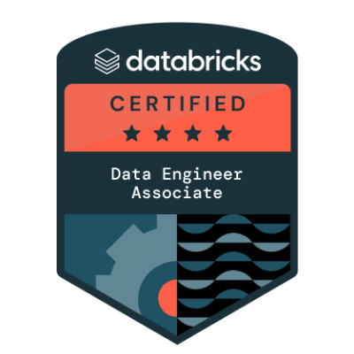
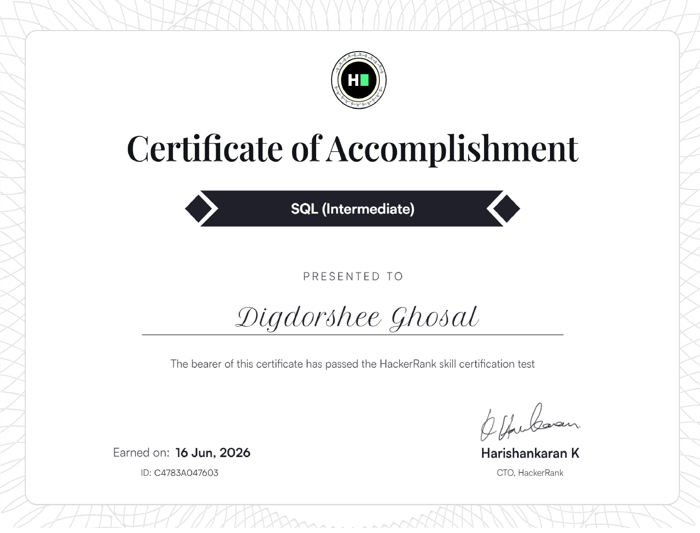

I design and build scalable, production-grade data pipelines using Azure, Databricks, and PySpark, with a growing focus on Generative AI.
I work on building and optimizing scalable, reliable, and production-grade data pipelines using the Azure data ecosystem. My work involves integrating data from multiple sources into Azure Data Lake Storage Gen2 (ADLS Gen2) and orchestrating end-to-end ETL/ELT workflows using Azure Data Factory (ADF). I focus on designing reusable and efficient pipeline workflows with appropriate scheduling, parameterization, dependencies, and data movement strategies.
In Azure Databricks, I develop data transformation pipelines using PySpark, SQL, Delta Lake, and Medallion Architecture (Bronze → Silver → Gold). I work across the data lifecycle, including data cleansing, transformation, validation, incremental processing, performance optimization, and preparing analytics-ready datasets. I also work with Unity Catalog and Databricks Workflows to support data governance, access management, and reliable workflow execution.
Beyond development, I focus on pipeline orchestration, monitoring, troubleshooting, data quality, and performance to ensure production-grade data solutions. I work with Azure DevOps and ServiceNow for task management, incident resolution, and collaboration while following Agile practices and development processes such as code reviews and controlled deployments. Alongside data engineering, I am expanding my expertise in Generative AI, exploring LLMs, RAG, embeddings, and AI-powered solutions to combine modern AI capabilities with scalable data engineering.

